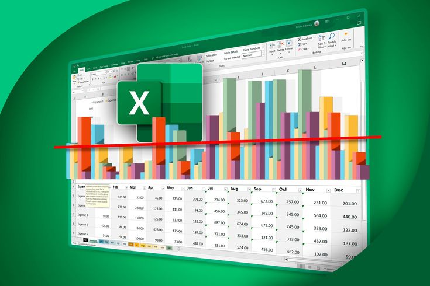
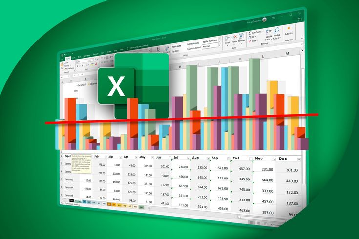

These projects shows how I took raw, messy datasets and turned them into clean, organised, and ready to use data using Microsoft Excel. I worked through common beginner friendly data cleaning steps such as removing blanks, fixing inconsistent entries, creating new columns, applying formulas, and preparing the datasets for analysis.
The goal was to improve accuracy, make the data easier to understand, and set it up for reporting or further analysis in tools like Power BI or Python.
 

I create clear interactive dashboards and visual reports that turn raw data into insights. These projects demonstrait my ability to design charts, spot trends, analyse matrics, and communicate results effectively using Microsoft Excel.

Showcasing interactive dashboards, data visualization and business intelligence solutions built with Power BI. These projects highlights skills in data cleaning, transformation and insightful reporting, turning raw data into actionable insights for decision making

A collection of iteractive dashboards and visual analytics created with Tableau. These projets the ability to transform complex datasets into clear, insightful visual stories, enabling data-driven decisions and effective business reporting.

A showcase of Python projects that demonstrate data analysis, automation and programming skills. These projects include data cleaning, visualization, machine learning and practical problem solving, highlighting the ability to extract insights and build fuctional solutions using Python.

A collection of projects showcasing database management and data querying skills using SQL. These projects higlight abilities in data extraction, transformation and analysis, as well as designing efficient queries and reports to support informed decision making.

A showcase of projects applying machine learning techniques to real world datasets. These projects demonstrate skills in data processing, model building, evaluation, and predictive analytics, highlighting the ability to derive actionable insights and intelligent solutions from data.